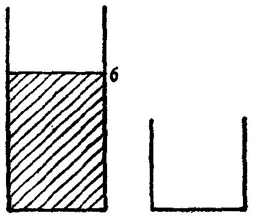
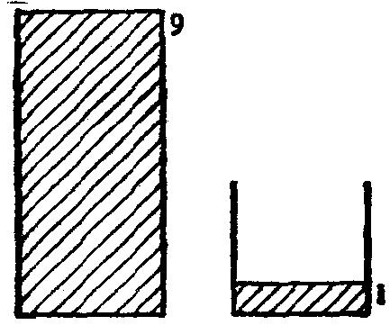

能够把大桶装满，然后倒掉小桶那么多；这样，我们就能够得到5夸脱水。我们
能不能也得到6夸脱水呢?这里还是两个空桶，我们也能……。
当碰到这个难题时，我们就象绝大多数人所做的那样。我们从两个空桶开
始，试试这个，试试那个，我们倒空又装满，而当我们不成功时，我们重新开
始，试试别的做法。我们在向前干，即，从给定的初始情况到所期望的最终情
况，从已知数据到未知数。经过多次试验，我们偶而也会成功。
(2)但是有卓越才能的人，或者从数学课中所学到的不仅汉是套公式演算
的人，不会在这种试验里浪费太多的时间，而是回过头去开始“倒着干”。
要求我们干的是什么?(未知数是什么?)让我们尽可能清楚地想象一下我
们所要达到的最后解答是怎样的。让我们设想，在我们面前，大桶中正好有6
夸脱水，而小桶空空如也，如图25(让我们“从所要求的开始，并设所求的已求
得”，帕扑斯语)。
从前面什么情况我们能够得到图25所期望的最终情况呢(让我们“研究从什
么前项可导出所求结果”，帕扑斯语)?当然，我们能够灌满大桶，即灌到9夸脱。
但是，接着我们应该能够正好倒掉3夸脱。而为了做到这点……我们必须在小桶
中正好有一夸脱水!这就是念头。见图26。
图25
图26
(我们刚才所完成的一步全然并非易事。很少人能够毫不犹豫地想到它。
事实上，认识到这一步的意义，我们就可预见到下面求解的一个梗概。)
可是我们怎么达到刚才图26的情况呢?让我们“再进一步研究，那个前项
的前项是什么?”因为河水量是无限的(就我们的目的而言)，所以图26的情况等